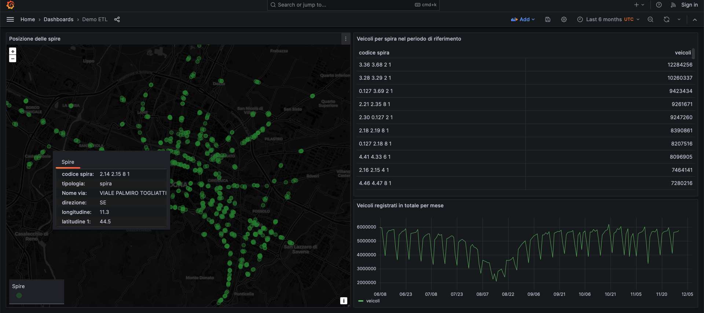

Data transformation and usage with Dremio and Grafana
In this scenario we will learn how to use Dremio to transform data and create some virtual datasets on top of it. Then, we will visualize the transformed data in a dashboard created with Grafana, by importing a template. For this template to work with minimal changes, make sure you match the naming of entities indicated throughout the tutorial.
In order to collect the initial data and make it accessible to Dremio, we will follow the first step of the ETL scenario, in which we download some traffic data and store it in the DigitalHub datalake.
Collect the data
Collect the data
The process of collecting data is the same as described in the ETL scenario introduction and Collect the data pages.
- Access Jupyter from your Coder instance and create a new notebook using the
Python 3 (ipykernel)kernel -
Set up the environment and create a project named
demo-etlimport digitalhub as dh import osPROJECT = "demo-etl" project = dh.get_or_create_project(PROJECT) -
Create the
srcfolder, define the download function and register itnew_folder = 'src' if not os.path.exists(new_folder): os.makedirs(new_folder)%%writefile "src/download-data.py" from digitalhub_runtime_python import handler @handler(outputs=["dataset"]) def downloader(url): # read and rewrite to normalize and export as data df = url.as_df(file_format='csv',sep=";") return dffunc = project.new_function( name="download-data", kind="python", python_version="PYTHON3_10", code_src="src/download-data.py", handler="downloader") -
Set the URL and execute the function:
URL = "https://opendata.comune.bologna.it/api/explore/v2.1/catalog/datasets/rilevazione-flusso-veicoli-tramite-spire-anno-2023/exports/csv?lang=it&timezone=Europe%2FRome&use_labels=true&delimiter=%3B" di= project.new_dataitem(name="url_data_item",kind="table",path=URL)run = func.run(action="job", inputs={'url':di.key}, outputs={"dataset": "dataset"}, local_execution=True)
Access the data from Dremio
Access Dremio from your Coder instance or create a new Dremio workspace. You should see MinIO already configured as an object storage and you should find the downloaded data in a .parquet file at the path minio/datalake/demo-etl/dataitem/dataset/0eed9ced-5f04-4f12-8494-763926070835/data.parquet. The auto-generated id before /data.parquet will be different for you.
Click on the file to open its Dataset Settings, verify that the selected format is Parquet and click Save. It will be saved as a Dremio dataset, so that it can be queried.
Now you can run SQL queries against the dataset. Try the following (update the id to match your own):
SELECT *
FROM minio.datalake."demo-etl".dataitem.dataset."0eed9ced-5f04-4f12-8494-763926070835"."data.parquet"
ORDER BY data, "codice spira"
Create a new Dremio space named demo_etl. We will create three virtual datasets and save them here.
Extract measurement data
Open the SQL runner and execute the following query, which will extract the traffic measurements to save them as a separate dataset:
SELECT "data.parquet".data, "data.parquet"."codice spira", "00:00-01:00", "01:00-02:00", "02:00-03:00", "03:00-04:00", "04:00-05:00", "05:00-06:00", "06:00-07:00", "07:00-08:00", "08:00-09:00", "09:00-10:00", "10:00-11:00", "11:00-12:00", "12:00-13:00", "13:00-14:00", "14:00-15:00", "15:00-16:00", "16:00-17:00", "17:00-18:00", "18:00-19:00", "19:00-20:00", "20:00-21:00", "21:00-22:00", "22:00-23:00", "23:00-24:00"
FROM minio.datalake."demo-etl".dataitem.dataset."0eed9ced-5f04-4f12-8494-763926070835"."data.parquet"
Click on the arrow next to Save Script as (top right), select Save View as..., name the new dataset misurazioni and save it in the space demo_etl.
Extract traffic sensors data
From the SQL runner, execute the following query, which will extract the traffic sensors data (e.g. their geographical position) as a separate dataset:
SELECT DISTINCT "data.parquet"."codice spira", "data.parquet".tipologia, "data.parquet".id_uni, "data.parquet".codice, "data.parquet".Livello, "data.parquet"."codice arco", "data.parquet"."codice via", "data.parquet"."Nome via", "data.parquet"."Nodo da", "data.parquet"."Nodo a", "data.parquet".stato, "data.parquet".direzione, "data.parquet".angolo, "data.parquet".longitudine, "data.parquet".latitudine, "data.parquet".geopoint
FROM minio.datalake."demo-etl".dataitem.dataset."0eed9ced-5f04-4f12-8494-763926070835"."data.parquet"
Select Save View as... again (do not overwrite the previous one), name the new dataset spire and save it in the space demo_etl.
Transform hourly measurements into daily measurements
From the SQL runner, execute the following query, which will sum the measurement columns, each corresponding to an hour, to obtain the daily value and save it as a new dataset:
SELECT data, "codice spira", "00:00-01:00"+"01:00-02:00"+"02:00-03:00"+"03:00-04:00"+"04:00-05:00"+"05:00-06:00"+"06:00-07:00"+"07:00-08:00"+"08:00-09:00"+"09:00-10:00"+"10:00-11:00"+"11:00-12:00"
+"12:00-13:00"+"13:00-14:00"+"14:00-15:00"+"15:00-16:00"+"16:00-17:00"+"17:00-18:00"+"18:00-19:00"+"19:00-20:00"+"20:00-21:00"+"21:00-22:00"+"22:00-23:00"+"23:00-24:00" AS totale_giornaliero
FROM (
SELECT * FROM "demo_etl".misurazioni
) nested_0;
Select Save View as... again (do not overwrite the previous one), name the new dataset misurazioni_giornaliere and save it in the space demo_etl.
Connect Grafana to Dremio
Access Grafana from your Coder instance or create a new Grafana workspace. Open the left menu and navigate to Connections > Data Sources. Add a new Dremio data source configured as follows:
- Name:
Dremio - URL: the Internal Endpoint you see on Coder for your Dremio workspace
- User:
admin - Password:
<dremio_password_set_on_coder>
Now you can create a dashboard to visualize Dremio data. An example dashboard is available as a JSON file at the user/examples/dremio_grafana path within the repository of this documentation.
Navigate to Dashboards from the left menu, expand the New button on the top right and select Import. Once imported, you will need to update the datasource.uid field, which holds a reference to the Dremio data source in your Grafana instance, throughout the JSON model.
To obtain your ID easily, navigate to Connections > Data Sources, select the Dremio source, and copy the ID from the page's URL:
https://<grafana_host>/connections/datasources/edit/<YOUR_DATASOURCE_ID>
Then, go back to Dashboards, open your dashboard, open the Dashboard settings (cog icon in the top toolbar) and select JSON Model from the left. There will be a number of instances where you have to replace the ID, referenced by datasource.uid. When done, click Save changes and return to your dashboard.
The dashboard includes three panels: a map of the traffic sensors, a table with the daily number of vehicles registered by each sensor and a graph of the vehicles registered monthly.

We can now use the dashboard to explore the data. We can either interact with the map to get the information related to each sensor, or use the dashboard filters to select different time ranges and analyze traffic evolution over time.